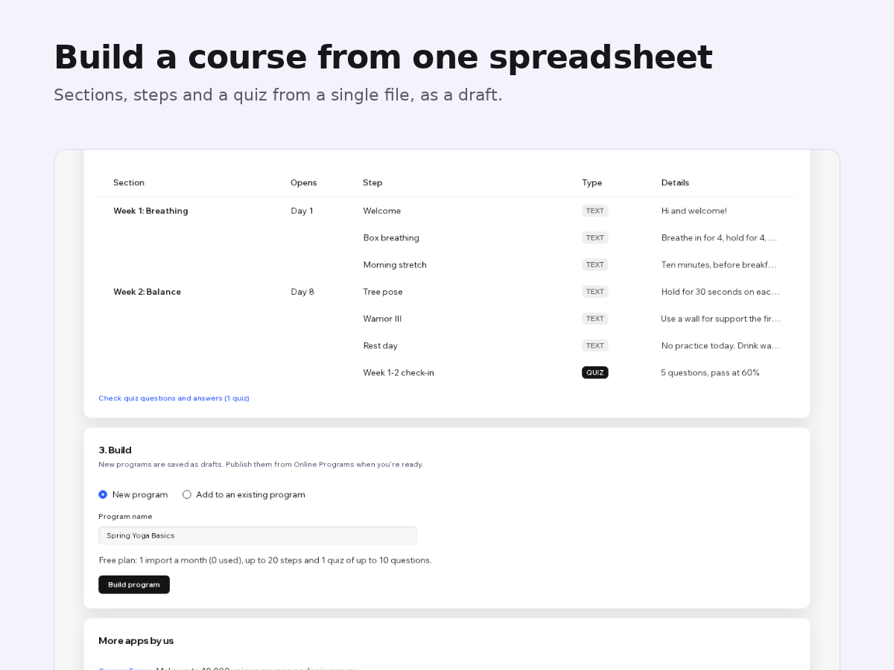

Program Loader
Import courses and quiz questions from a CSV
- Build a program from one CSV or Google Sheet
- Quiz questions with answers, feedback, scores
- Repeat a step on a weekly schedule
- Export a program and load it on another site

What it does
Your course is already in a spreadsheet, a doc or another platform. Program Loader builds the online program from one file, so you don't type every step and quiz question again.
Download the template and fill it in: one row per section, step, quiz, question and answer choice. Load the file or paste the rows straight from Google Sheets or Excel. Before anything is saved, a preview lists the program section by section and points to each problem by row number, for example a single choice question with two right answers. Then press Build program: you get a draft to check and publish.
Quizzes keep single choice, multiple choice, short text, number and long text questions, right answers, feedback, scores and a passing grade.
Export does the reverse: any program becomes the same kind of file, so you can edit it in a spreadsheet or load it on another site.
The free plan imports one program a month with up to 20 steps and one quiz of 10 questions, and exports without limits. Premium imports any size, repeats a step on a schedule (say Monday, Wednesday and Friday for 12 weeks), draws random questions from a question bank and keeps an import log.
Price
Free
- 1 program import a month
- Up to 20 steps and 1 quiz of 10 questions
- Export any program to a file
Premium
$8/month, $80/year ($6.67/month billed yearly)
- Imports of any size, as often as you like
- Repeat a step on a schedule
- Random questions from a question bank
- Import log